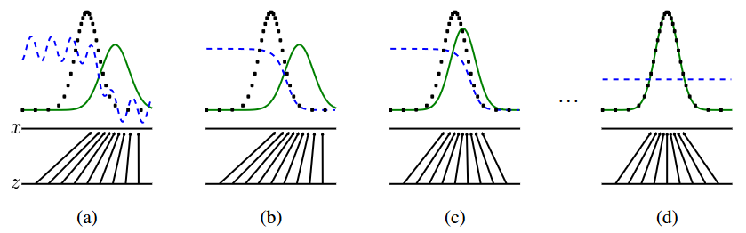

论文精读 GAN
GAN Note
最新版本论文：Generative Adversarial Nets (neurips.cc)（建议看这个）
arXiv版本论文：1406.2661.pdf (arxiv.org)（早期写的）
1.标题 + 作者
近 5 年，GAN 上头条次数很多，Reddit 里 GAN 很火
使用GAN生成人脸网址：thispersondoesnotexist.com
加州法令：禁止换脸、禁止对政治人物骚操作，说未讲过的话
GAN: 两个网络相互对抗
- generative: ML模型分 discriminative(AlexNet, ResNet, Transformer) 和 generative
- adversarial: 对抗
- nets: networks 简写，非 native speaker 不建议使用简写
2.摘要
写作简洁，可直接搬运（wiki, textbook）
- 创新工作：讲清楚自己是谁？
- 拓展工作：和别人的区别、创新
本文的 framework ：estimating generative models via an adversarial process；simultaneously train two models 生成器G、判别器D
- G：让 D 犯错；让生成数据 尽可能靠近 原始分布；
- D：
在任意函数 G 和 D 的空间里，a unique solution exists，独一无二的解表明 G 找到了真实数据分布，D 无法分辨。
G 和 D 是 MLP，error backpropagation 训练，简单。无需 Markov chains or unrolled approximate inference networks 近似推理过程的展开。
3.导言
深度学习不等于深度神经网络，深度神经网络只是深度学习的其中之一。深度学习是对各种数据特征的分布（概率）表示（represent probability distributions）。
discriminative 模型发展很好，generative 模型发展困难、Why? difficulty in maximum likelihood estimation 计算最大似然概率的近似时，计算困难。
本文解决了generative模型发展的困难：不近似likelihood 函数，使用别的方法计算 得到更好的模型。
“adversarial nets” framework里面的G和D都是MLP；G的输入是随机噪声（random noise），映射到任何一个想拟合的分布。G和D使用MLD，不使用 Markov chains 分布采样，使用 backpropagation 训练网络，有计算上的优势。
4.相关工作
4.1 早期生成模型
构造带有参数的概率分布函数（“provided a parametric specification of a probability distribution function”），去逼近真实的分布函数，通过maximizing the log-likelihood去训练此概率分布函数。例如：“Boltzmann machine” 。
存在问题：
- 需要提前知道这个分布，才能构造带参的概率分布函数
- 计算这个分布函数困难，维度比较高
如何解决：
- 不需要提前知道这个分布，直接学习这个模型，近似数据分布
Boltzmann machine 和 GAN 的 generative models 有什么区别
- Boltzmann machine：一定要学习一个分布，知道分布的均值、方差等一系列参数
- GAN：直接学习一个模型，不需要知道其他参数
GAN计算容易，但不知道真实的分布是什么样的。
4.2 误差反向传递对GAN求解
为什么误差传递对GAN有效：对f的期望起到等价于对F自己求导
4.3 相关模型
（1）VAEs
VAEs：使用随机反向传播训练“variational autoencoders” ，类似于GAN，但是在第二个神经网络不同，VAEs使用识别模型，进行近似推理（“recognition model that performs approximate inference” ）；GANs需要差异化数据，因此不能有模型离散数据。
（2）NCE（“Noise-contrastive estimation” ）
NCE：训练生成模型通过学习权重,使模型适用于不同的数据从一个固定的噪声分布。使用以前训练模型的噪声分布允许训练序列模型提高质量。
NCE的不足：关键指标的限制是其“鉴别器”被定义为噪声的概率密度分布的比例和分布的模型,因此需要通过评估和backpropagate密度的能力。
NCE 的损失函数复杂一点 —> 求解性能不如 GAN
（3）PM（“predictability minimization” ）
Jürgen（LSTM作者） predictability minimization算法被埋没了，Jürgen 认为 GAN 是 reverse PM。
PM和GAN主要有三点区别：
- 网络之间的竞争是唯一的，但训练网络是统一的。PM只是隐藏单元，鼓励一个神经网络统计独立完成的一些任务；
- 两个网络之间竞争的本质是不一样的。在PM中，两个网络的输出进行比较,一个网络试图使输出相似，另一个试图让输出不同，输出是一个标量。在GANs中，一个网络产生一个丰富、高维向量作为输入到另一个网络，并试图选择一个输入，其他网络不知道如何处理。
- 学习过程不同。PM被描述为一个优化问题的目标函数是最小化，学习最小的目标函数。GANs基于极大极小的策略，而不是一个优化的问题,和有一个价值函数,一个智能体寻求最大化和其他试图最小化。
（4）“adversarial examples”
adversarial examples 是基于例子发现通过使用梯度优化直接在输入一个分类网络,为了找到类似于数据分类错误的例子。
这种adversarial examples 的存在确实表明生成对抗网络训练可能是低效的，因为它们表明，可以使现代辨别网络自信地承认一个类不模仿任何human-perceptible属性的类。
5.模型
5.1 G和D都是MLP
- G：输入为随机噪声 $p_z(z)$ ，维度不确定，接近真实分布x的维度；在MLP中通过$G(z; \theta_g)$ 学习参数 $\theta_g$ ,输出生成的数据。把 z 映射成 x
- D：输入为G生成的数据或真实数据x；在MLP中通过$D(x;\theta_d)$ 学习参数$\theta_d$ ，输出为一维标量，若为1，则这张图片来自真实采样数据x；若为0，则输入来自生成模型。
使用MLP的利弊：计算简单、但不真正分布。看到一个图片，很难找到对应的 z；只能反向操作，随机给一个 z ，生成一个像样的图片。
同时训练D和G：
- 训练D 正确分类的概率：真实采样数据和来自G生成的数据
- 训练G 尽可能使D犯错，D(G(x))更大，更靠近1
5.2 value function V (G, D)
D 判断此图是生成的，$D(G(Z)) = 0,log( 1 - D(G(Z)) ) = log1 = 0$
D 判断此图是真实采样，$D(G(Z)) = 1, log( 1 - D(G(Z)) ) = log0 = -∞$
value function 有 min G max D 的双目标：（two-player minimax game Nash equilibrium：D和G都不能往前进步）
- D 使数据尽量分开
- G 使数据尽量分不开
min G 尽可能得使 D 判别器 犯错，无法判断来自 真是采样 or 生成数据。
训练 G 使得 D 无法区别 是真实采样数据 还是生成数据。
- 完美情况：$log 1 + log 1 = 0$
- 不完美情况：$log(0 - 1) + log(0 -1) < 0$ ——> maximize D 正确分类的概率，objective 靠近 0，靠近完美情况
5.3 训练过程

绿色实线：G对噪声z的映射
蓝色虚线：D在数据空间上的判断线
黑色虚线：数据x的真实分布
训练过程
- step 1: G 把 均匀分布采样得到的噪声 z 映射到 绿色高斯分布
- step 1 —> 2: D 尽可能地去学习如何判断，i.e., 真实数据均值更靠左，将左侧的数据判断为真 1， 将右侧数据判断为假 0
- step 2 —> 3：G 尽可能地去糊弄 D，把高斯分布的均值中心往左挪动
- final step: G 把 来自均匀分布的噪声，映射成和真实 data x 相似的高斯分布。D 对来自真实采样的数据 or G 生成的数据无法判断来源，概率都是 0.5，躺平———-
5.4 算法
5.5 一些问题
（1）G迭代轮次k
k 不能太小 —> 保证 判别器 D 有足够的更新
- D 要对 G 生成的不错的数据 有一定的判别能力，不然 G 很无聊的，都不想糊弄 D，轻而易举。
- 警察不给力，假钞不会被发现，抓不到造假者，无需提升工艺，游戏结束。
k 不能太大 —> D 过于完美，D(G(z^(i))) = 0，对值为 0 求导，G 梯度更新有困难
- 警察超厉害，造假者产一点假钞就会被发现，端掉制造工厂；造假者赚不到钱，不能提升工艺，结束游戏。
最好情况：双方实力相当、相爱相杀、一起进步。k 的设计目标：使得 D 和 G 的更新进度差不多
（2）判断GAN收敛？
min max 两项：一方不动、一方动；双方都在相互抖动；有很多 GAN 收敛相关的研究工作。
（3）G的梯度更新问题
早期 G 比较弱，生成数据和真实采样的数据差距很大。—> D 判别器 很容易区分数据来源。 —> $log( 1 - D(G(z)) )$ 变为 $log(1 - 0) = 0$ —> 无法更新判别器 D 的参数。
改变 value function：$min log( 1 - D(G(z)) )$ —> $max log( D(G(z)) )$
如果 D 判别得很好，$log( D(G(z)) ) = log( 0 )= -∞$ 带来其它问题，有后续的研究工作改进。
6.理论
6.1 Proposition 1：全局最优解 $ p_g = p_{data} $
当固定G时，全局最优辨别器D为：$D^*G(x) = \frac{p{data}(x)}{p{data}(x) + p_g(x)}$
value function 的全局最优解 $pg = p{data}$ , 当且仅当 G 生成器学到的分布和真实数据分布一致。
- $p_{data}(x)$ : x 在真实数据分布中的概率 [0,1]
- $p_g(x)$ : x 在生成器拟合的分布中的概率[0,1]
- global optimum: $D_G^*(x) = 1 / 2$
D 的训练过程：从真实数据分布和噪音变量的先验分布中采样数据，用 value function 训练一个二分类的分类器，但分类器输出的概率一直是 1 / 2 —> D 什么都分不出来 —> 分布是重合的
two sample test 判断两块数据是否来自同一分布。
- 1 / 2 的启示：高维数据统计分布不好用时，训练一个分类器。
- 这个分类器能分开两块数据 —> 不同分布
- 这个分类器不能分开两块数据 —> 相同分布
- 分类器的应用：部署 训练集上训练好的模型 到另一个环境，用一个分类器检测 训练集和测试集 是否同一分布，避免部署的新环境和已有模型的不匹配。
6.2 Theorem 1
C(G) 取全局最小值时，if and only if 生成器 G 生成的数据分布和真实数据分布一样 p_g = p_data
6.3 Proposition 2 :
当 G 和 D 有足够的容量的时候，在算法 1 的每一步，判别器 D 是可以达到最优解的，对 生成器 G 的优化：判别器 D 已经换成了 $D_G^*$ ，p_g会逼近p_data
7.实验 + 总结
最后一列是GAN生成的
disad：训练难，G 和 D 需要比较好的均衡，否则生成的图片很难看。
adv：G 没有去看真实数据，没有试图拟合数据特征，生成的图片中边缘比较锐利。 ❌
8.评价
8.1 写作：清晰明确，GAN 在做什么？
Abstract: GAN 在干什么？
Intro: 短 + 故事性（why 需要 GAN，无需拟合似然函数的参数、计算简单）
Related works: GAN 与已有工作 adversarial examples 的区别。真正伟大的工作：不在于你的那些想法是否出现过，而在于你给大家展示，这个工作可以取得非常好的应用；让别人信服，有人 follow，把这个领域做大做强。
adversarial nets: value function 如何做优化
theoretical results: 证明 value function 为什么能得到最优解，求解算法 algorithm 1 差不多能得到最优解
experiments + pros & cons + future works
开创性比较高的工作：适合本文的写法
创新度不够的工作：讲清楚和别人的区别、文章的贡献
8.2 GAN 算法评论：
- 无监督学习，无需标注数据
- 标签 by 数据来自真实采样 or 来自生成器拟合的
- 有监督学习的损失函数来训练无监督学习，训练高效
- 自监督学习的灵感来源 i.e., BERT